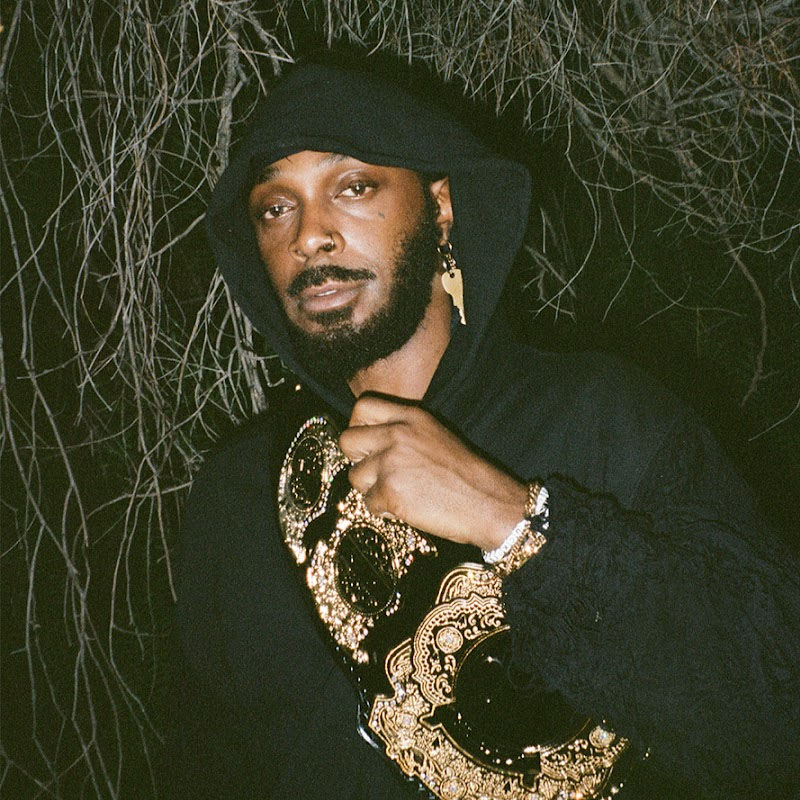

JPEGMAFIA
JPEGMAFIA, geboortenaam Barrington DeVaughn Hendricks, is geboren in New York City, Verenigde Staten en hij is opgegroeid in Flatbush. Maar vanaf zijn 13e verhuisde hij naar Alabama, waar hij voor het eerst geconfronteerd werd met hevig racisme. JPEGMAFIA heeft een hectisch leven gehad. Op 18 jarige leeftijd had hij zich aangemeld bij het Amerikaanse leger. Hij is later ontslagen omdat hij opsprak tegen de mishandeling van zijn autoreiten. Hij claimt dat zij gebruik maakte van hun macht om hem en anderen te kleineren op allemaal verschillenden manieren. Hij is nu 34 jaar oud en staat bekend als een van de meest aparte, uitgesproken, unieke rappers van deze tijd.
JPEGMAFIA noemt zichzelf een producer eerst en dan een rapper. Hij maakt vanaf 15 jaar al beats op zijn laptop, maar niemand wie hij kende was er fan van. Ze waren eerder in de war door de rare stijl van JPEG. JPEGMAFIA noemt zichzelf JPEG omdat zijn generatie is opgegroeid met het internet wat eigenlijk een hele nieuwe wereld is en hij gelooft dat dat veel betekenis heeft voor de mensen die ermee zijn opgegroeid.